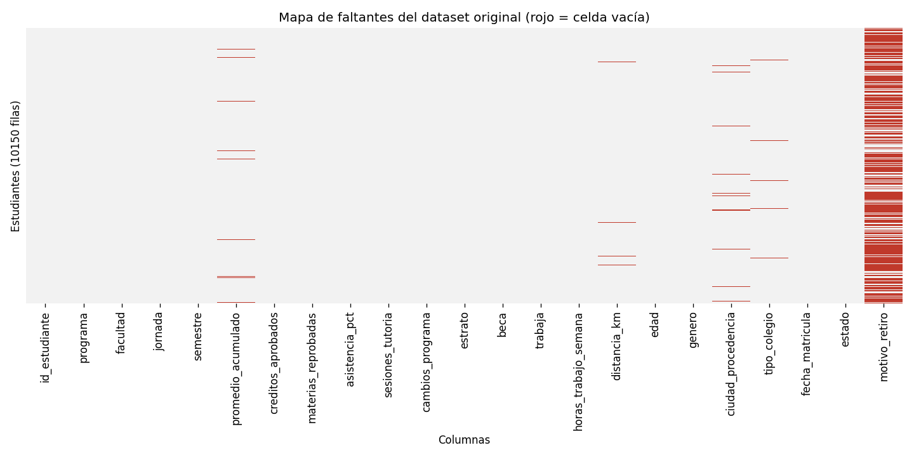
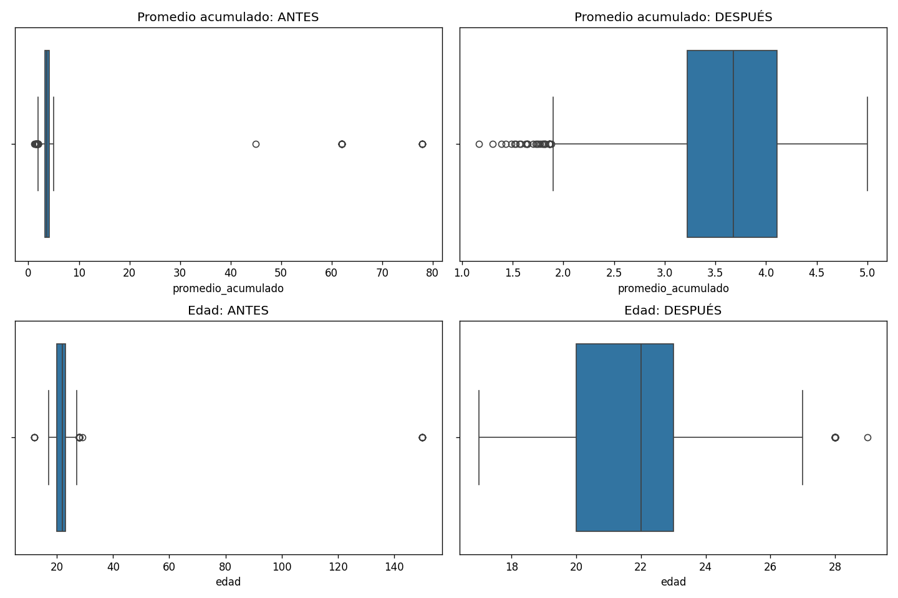
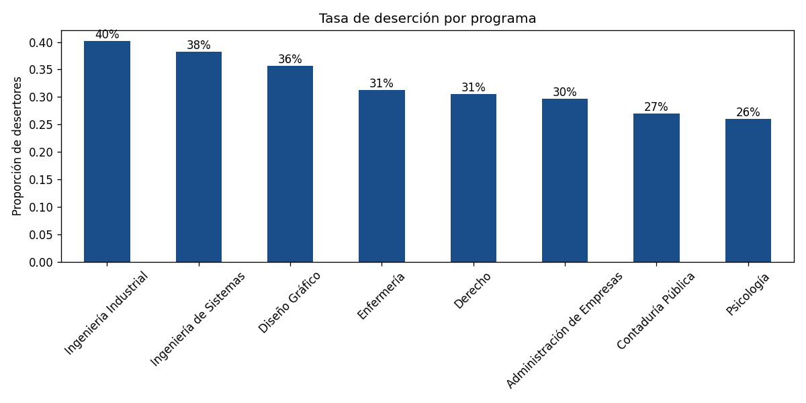
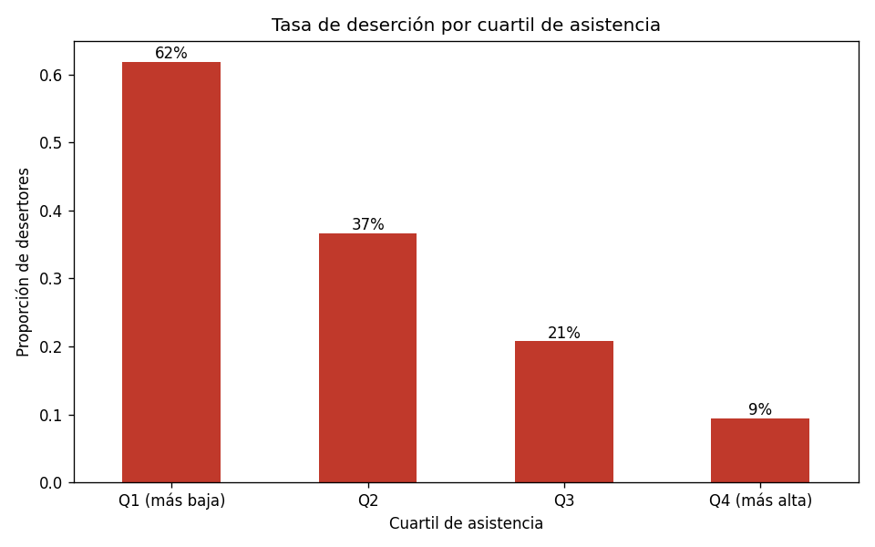

(10150, 23)
RangeIndex: 10150 entries, 0 to 10149 Data columns (total 23 columns): # Column Non-Null Count Dtype --- ------ -------------- ----- 0 id_estudiante 10150 non-null str 1 programa 10150 non-null str 2 facultad 10150 non-null str 3 jornada 10150 non-null str 4 semestre 10150 non-null int64 5 promedio_acumulado 9846 non-null float64 6 creditos_aprobados 10150 non-null int64 7 materias_reprobadas 10150 non-null int64 8 asistencia_pct 10150 non-null str 9 sesiones_tutoria 10150 non-null int64 10 cambios_programa 10150 non-null int64 11 estrato 10150 non-null int64 12 beca 10150 non-null str 13 trabaja 10150 non-null str 14 horas_trabajo_semana 10150 non-null str 15 distancia_km 9951 non-null float64 16 edad 10150 non-null int64 17 genero 10150 non-null str 18 ciudad_procedencia 10047 non-null str 19 tipo_colegio 9998 non-null str 20 fecha_matricula 10150 non-null str 21 estado 10150 non-null str 22 motivo_retiro 3273 non-null str dtypes: float64(2), int64(7), str(14) memory usage: 1.8 MB
| semestre | promedio_acumulado | creditos_aprobados | materias_reprobadas | sesiones_tutoria | cambios_programa | estrato | distancia_km | edad | |
|---|---|---|---|---|---|---|---|---|---|
| count | 10150.000000 | 9846.000000 | 10150.000000 | 10150.000000 | 10150.000000 | 10150.000000 | 10150.000000 | 9951.000000 | 10150.000000 |
| mean | 5.514187 | 3.760688 | 23.607882 | 1.405123 | 0.986897 | 0.079606 | 2.696946 | 32.244498 | 21.830246 |
| std | 2.884232 | 2.720929 | 14.936992 | 1.675701 | 1.027039 | 0.270695 | 1.360442 | 121.117830 | 4.221226 |
| min | 1.000000 | 1.170000 | 0.000000 | 0.000000 | 0.000000 | 0.000000 | 1.000000 | 1.100000 | 12.000000 |
| 25% | 3.000000 | 3.220000 | 11.000000 | 0.000000 | 0.000000 | 0.000000 | 2.000000 | 8.500000 | 20.000000 |
| 50% | 6.000000 | 3.680000 | 23.000000 | 1.000000 | 1.000000 | 0.000000 | 2.000000 | 13.800000 | 22.000000 |
| 75% | 8.000000 | 4.110000 | 36.000000 | 2.000000 | 2.000000 | 0.000000 | 3.000000 | 22.200000 | 23.000000 |
| max | 10.000000 | 78.000000 | 52.000000 | 13.000000 | 7.000000 | 1.000000 | 6.000000 | 999.000000 | 150.000000 |
| count | |
|---|---|
| programa | |
| Derecho | 1535 |
| Administración de Empresas | 1360 |
| Ingeniería Industrial | 1340 |
| Ingeniería de Sistemas | 1303 |
| Contaduría Pública | 1214 |
| Enfermería | 1189 |
| Psicología | 1065 |
| Diseño Gráfico | 884 |
| Ingenieria de Sistemas | 144 |
| Psicologia | 116 |
| count | |
|---|---|
| jornada | |
| Diurna | 6030 |
| Nocturna | 2635 |
| Fin de semana | 1000 |
| diurna | 318 |
| nocturna | 89 |
| NOCTURNA | 78 |
| count | |
|---|---|
| genero | |
| Femenino | 5063 |
| Masculino | 4528 |
| M | 239 |
| F | 167 |
| femenino | 153 |
| count | |
|---|---|
| estado | |
| activo | 5977 |
| desertor | 3273 |
| graduado | 900 |
| nulos | |
|---|---|
| promedio_acumulado | 304 |
| distancia_km | 199 |
| ciudad_procedencia | 103 |
| tipo_colegio | 152 |
| motivo_retiro | 6877 |
Guiones en asistencia_pct: 202
Guiones en horas_trabajo_semana: 2822
Valores 999 en distancia_km: 152
300 celdas
Edades fuera de 15 a 60 años: 12
Promedios mayores a 5: 17
Horas de trabajo mayores a 100 por semana: 30
150 filas
3052 de 10150 fechas
Cada columna del dataset es una franja vertical y cada estudiante es una línea horizontal. Las líneas rojas son celdas vacías. Una columna casi toda roja tiene muchos faltantes; una columna gris no tiene ninguno.

| tipo | nulos | |
|---|---|---|
| asistencia_pct | float64 | 202 |
| horas_trabajo_semana | float64 | 2822 |
| distancia_km | float64 | 351 |
| asistencia_pct | horas_trabajo_semana | distancia_km | |
|---|---|---|---|
| count | 9948.00 | 7328.00 | 9799.00 |
| mean | 87.08 | 15.49 | 17.25 |
| std | 9.67 | 18.23 | 13.16 |
| min | 48.00 | 0.00 | 1.10 |
| 25% | 80.60 | 0.00 | 8.50 |
| 50% | 87.80 | 14.00 | 13.70 |
| 75% | 95.10 | 27.00 | 21.60 |
| max | 100.00 | 200.00 | 120.00 |
| count | |
|---|---|
| programa | |
| Derecho | 1535 |
| Ingeniería de Sistemas | 1447 |
| Administración de Empresas | 1360 |
| Ingeniería Industrial | 1340 |
| Contaduría Pública | 1214 |
| Enfermería | 1189 |
| Psicología | 1181 |
| Diseño Gráfico | 884 |
| count | |
|---|---|
| jornada | |
| Diurna | 6348 |
| Nocturna | 2802 |
| Fin de semana | 1000 |
| count | |
|---|---|
| genero | |
| Femenino | 5383 |
| Masculino | 4767 |
| count | |
|---|---|
| ciudad_procedencia | |
| Bogotá | 3054 |
| Medellín | 1773 |
| Cali | 1380 |
| Otra ciudad | 1246 |
| Bucaramanga | 1050 |
| Rionegro | 774 |
| Barranquilla | 770 |
| NaN | 103 |
Fechas en formato AAAA-MM-DD: 7098
Fechas en formato DD/MM/AAAA: 3052
Fechas sin convertir: 0
Tipo final de la columna: datetime64[us]
Rango: 2021-01-15 a 2025-09-10
| texto original | fecha convertida | |
|---|---|---|
| 0 | 2023-05-04 | 2023-05-04 |
| 1 | 13/07/2023 | 2023-07-13 |
| 2 | 13/08/2022 | 2022-08-13 |
| 3 | 2023-06-10 | 2023-06-10 |
| 4 | 2022-07-27 | 2022-07-27 |
| 5 | 12/01/2023 | 2023-01-12 |
| 6 | 29/08/2025 | 2025-08-29 |
| 7 | 27/12/2022 | 2022-12-27 |
Filas antes: 10150
Filas duplicadas eliminadas: 150
Filas después: 10000
id_estudiante repetidos antes de eliminar: 150
id_estudiante repetidos después de eliminar: 0
| nulos antes | nulos después | |
|---|---|---|
| promedio_acumulado | 298 | 0 |
| ciudad_procedencia | 100 | 0 |
| tipo_colegio | 150 | 0 |
| motivo_retiro | 6764 | 6562 |
Nulos en motivo_retiro: 6562
Estudiantes que no son desertores: 6562
9702 estudiantes
| edad | promedio_acumulado | horas_trabajo_semana | |
|---|---|---|---|
| count | 9702.00 | 9702.00 | 6995.00 |
| mean | 21.82 | 3.75 | 15.53 |
| std | 4.29 | 2.61 | 18.30 |
| min | 12.00 | 1.17 | 0.00 |
| 25% | 20.00 | 3.22 | 0.00 |
| 50% | 22.00 | 3.68 | 14.00 |
| 75% | 23.00 | 4.11 | 27.00 |
| max | 150.00 | 78.00 | 200.00 |
| edad | promedio_acumulado | horas_trabajo_semana | |
|---|---|---|---|
| count | 9687.00 | 9687.00 | 9687.00 |
| mean | 21.72 | 3.65 | 10.67 |
| std | 2.20 | 0.64 | 13.54 |
| min | 17.00 | 1.17 | 0.00 |
| 25% | 20.00 | 3.22 | 0.00 |
| 50% | 22.00 | 3.68 | 0.00 |
| 75% | 23.00 | 4.11 | 22.00 |
| max | 29.00 | 5.00 | 40.00 |
9687 estudiantes
Desertores (True): 3136 de 9687 estudiantes (32.4%)
| estudiantes | minima | maxima | promedio | |
|---|---|---|---|---|
| cuartil_asistencia | ||||
| Q1 (más baja) | 2385 | 48.0 | 80.5 | 73.9 |
| Q2 | 2386 | 80.6 | 87.8 | 84.4 |
| Q3 | 2348 | 87.9 | 95.0 | 91.3 |
| Q4 (más alta) | 2371 | 95.1 | 100.0 | 98.7 |
197 estudiantes no tienen asistencia registrada (venían con '-'), así que no entran en ningún cuartil.



| tasa | estudiantes | |
|---|---|---|
| programa | ||
| Ingeniería Industrial | 0.402 | 1271 |
| Ingeniería de Sistemas | 0.382 | 1386 |
| Diseño Gráfico | 0.356 | 848 |
| Enfermería | 0.313 | 1132 |
| Derecho | 0.305 | 1447 |
| Administración de Empresas | 0.297 | 1304 |
| Contaduría Pública | 0.270 | 1162 |
| Psicología | 0.260 | 1137 |
Respuesta: Ingeniería Industrial, con una tasa de 40.2% sobre 1271 estudiantes.
| tasa | estudiantes | |
|---|---|---|
| beca | ||
| no | 0.364 | 7004 |
| sí | 0.219 | 2683 |
Respuesta: becados 21.9% (2683 estudiantes) frente a no becados 36.4% (7004 estudiantes). Es una posible causa de que la beca aumente la permanencia pero no se puede afirmar por completo.
| promedio | estudiantes | |
|---|---|---|
| jornada | ||
| Nocturna | 3.46 | 2666 |
| Fin de semana | 3.70 | 949 |
| Diurna | 3.72 | 6072 |
Respuesta: Nocturna, con promedio 3.46 sobre 2666 estudiantes.
| materias_reprobadas | estudiantes | |
|---|---|---|
| estado | ||
| activo | 0.62 | 5692 |
| desertor | 3.07 | 3136 |
Respuesta: los desertores tienen en promedio 3.07 materias reprobadas (3136 estudiantes) y los activos 0.62 (5692 estudiantes). Se excluyen los graduados porque no pertenecen a ninguno de los dos grupos.
| tasa | asistencia_promedio | estudiantes | |
|---|---|---|---|
| cuartil_asistencia | |||
| Q1 (más baja) | 0.619 | 73.905 | 2385 |
| Q2 | 0.367 | 84.406 | 2386 |
| Q3 | 0.207 | 91.336 | 2348 |
| Q4 (más alta) | 0.094 | 98.660 | 2371 |
Respuesta: sí. La tasa pasa de 9.4% en el cuartil de asistencia más alta a 61.9% en el más bajo. la baja asistencia puede ser una señal de alerta.
| paso | columna | accion | filas_afectadas | justificacion |
|---|---|---|---|---|
| convertir_numericos | asistencia_pct | quitar símbolo % | 300 | El % es solo formato peroo el número es el mismo y se necesita como número para calcular. |
| convertir_numericos | asistencia_pct | guion '-' a nulo | 202 | El guion significa 'sin dato' --> nulo real para que pandas lo reconozca. |
| convertir_numericos | horas_trabajo_semana | guion '-' a nulo | 2822 | El guion significa 'sin dato' --> nulo real para que pandas lo reconozca. |
| convertir_numericos | distancia_km | 999 a nulo | 152 | 999 es un código de 'sin dato', no una distancia real; dejarlo inflaría el promedio. |
| unificar_categorias | programa | unificar escritura | 260 | Eran el mismo valor escrito distinto (mayúsculas, tildes o abreviaturas); sin unificar, un mismo grupo se contaría como varios. |
| unificar_categorias | jornada | unificar escritura | 485 | Eran el mismo valor escrito distinto (mayúsculas, tildes o abreviaturas); sin unificar, un mismo grupo se contaría como varios. |
| unificar_categorias | genero | unificar escritura | 559 | Eran el mismo valor escrito distinto (mayúsculas, tildes o abreviaturas); sin unificar, un mismo grupo se contaría como varios. |
| unificar_categorias | ciudad_procedencia | unificar escritura | 542 | Eran el mismo valor escrito distinto (mayúsculas, tildes o abreviaturas); sin unificar, un mismo grupo se contaría como varios. |
| convertir_fechas | fecha_matricula | convertir DD/MM/AAAA a fecha | 3052 | La misma columna tenía dos formatos; con formato explícito no se confunden día y mes, y la columna queda como fecha para poder calcular con ella. |
| eliminar_duplicados | todas | eliminar filas duplicadas | 150 | Son filas idénticas en todas las columnas, incluido id_estudiante: es el mismo estudiante registrado dos veces. Dejarlas lo contaría doble en las tasas. |
| tratar_faltantes | promedio_acumulado | eliminar filas | 298 | Una nota no se puede inventar. Imputar el promedio pondría a todos en la media y escondería justo a los estudiantes con bajo rendimiento, que importan para la deserción. |
| tratar_faltantes | ciudad_procedencia | reemplazar nulo por 'Sin dato' | 96 | Es un dato descriptivo: eliminar la fila perdería sus demás datos, e inventar una ciudad o colegio sería falso. 'Sin dato' conserva la fila y es honesto. |
| tratar_faltantes | tipo_colegio | reemplazar nulo por 'Sin dato' | 145 | Es un dato descriptivo: eliminar la fila perdería sus demás datos, e inventar una ciudad o colegio sería falso. 'Sin dato' conserva la fila y es honesto. |
| tratar_faltantes | motivo_retiro | dejar como nulo | 0 | No es un error: la columna solo aplica a desertores. Los 6562 nulos coinciden con los 6562 estudiantes activos o graduados. |
| tratar_imposibles | edad | edad fuera de 15-60 a la mediana (22) | 12 | Una edad de 12 o 150 años es un error de digitación. La mediana representa al estudiante típico y, a diferencia del promedio, no la arrastran los valores extremos. |
| tratar_imposibles | promedio_acumulado | eliminar filas con promedio > 5 | 15 | La escala es de 0 a 5. No sabemos si 45 es 4.5 (escala de 50) o 2.25 (escala de 100); adivinar la escala sería inventar la nota, igual que en el paso 7. |
| tratar_imposibles | horas_trabajo_semana | nulo a 0 si no trabaja | 2703 | Si el estudiante no trabaja, sus horas de trabajo son 0: el dato no falta, se deduce. |
| tratar_imposibles | horas_trabajo_semana | más de 100 horas a la mediana de quienes trabajan (24) | 29 | 200 horas no caben en una semana de estudio. Se usa la mediana solo de quienes trabajan, porque incluir a los que tienen 0 horas la bajaría artificialmente. |